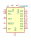
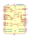
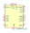
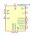
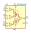
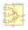

| Symbol |
Description |

AD5593R | Description: 8-channel 12bits configurable ADC/DAC/GPIO Internal Reference, I2C interface Integrated temperature sensor,Single Supply, TSSOP-16
Keys: 8channel 12bit ADC DAC GPIO I2C Temperature
Datasheet: https://www.analog.com/media/en/technical-documentation/data-sheets/AD5593R.pdf |

AD630ARZ | Description: High precision Balanced Modulator/Demodulator, 2 MHz, SOIC-20W
Keys: modulator demodulator
Datasheet: https://www.analog.com/media/en/technical-documentation/data-sheets/ad630.pdf |
AD637xQ | Description: High Precision, Wideband RMS-to-DC Converter, DIP-14
Keys: rms-to-dc
Datasheet: https://www.analog.com/media/en/technical-documentation/data-sheets/AD637.pdf |
AD637xRZ | Description: High Precision, Wideband RMS-to-DC Converter, SOIC-16
Keys: rms-to-dc
Datasheet: https://www.analog.com/media/en/technical-documentation/data-sheets/AD637.pdf |
AD654JN | Description: Low Cost Monolithic Voltage-to-Frequency Converter, DIP-8
Keys: v-to-f v-f
Datasheet: https://www.analog.com/media/en/technical-documentation/data-sheets/AD654.pdf |
AD654JR | Description: Low Cost Monolithic Voltage-to-Frequency Converter, SOIC-8
Keys: v-to-f v-f
Datasheet: https://www.analog.com/media/en/technical-documentation/data-sheets/AD654.pdf |
LF398_DIP8 | Description: Sample And Hold Unity Gain Follower, DIP-8
Keys: sample hold buffer unity gain
Datasheet: http://www.ti.com/lit/ds/symlink/lf398-n.pdf |
LF398_SOIC14 | Description: Sample And Hold Unity Gain Follower, SOIC-14
Keys: sample hold buffer unity gain
Datasheet: http://www.ti.com/lit/ds/symlink/lf398-n.pdf |
LF398_SOIC8 | Description: Sample And Hold Unity Gain Follower, SOIC-8
Keys: sample hold buffer unity gain
Datasheet: https://www.analog.com/media/en/technical-documentation/data-sheets/lt0398s8.pdf |
LF398H | Description: Sample And Hold Unity Gain Follower, TO-99-8
Keys: sample hold buffer unity gain
Datasheet: http://www.ti.com/lit/ds/symlink/lf398-n.pdf |

MLX90314xDF | Description: Programmable Sensor Interface (Signal Conditioner), SOIC-16W
Keys: sensor signal conditioning
Datasheet: https://www.melexis.com/-/media/files/documents/datasheets/mlx90314-datasheet-melexis.pdf |

MLX90320xFR | Description: Programmable Automotive Sensor Interface (Signal Conditioner), SSOP-14
Keys: sensor signal conditioning
Datasheet: https://www.melexis.com/-/media/files/documents/datasheets/mlx90320-datasheet-melexis.pdf |

MPY634KP | Description: Wide Bandwidth Precision Analog Multiplier, DIP-14
Keys: analog multiplier
Datasheet: http://www.ti.com/lit/ds/symlink/mpy634.pdf |

MPY634KU | Description: Wide Bandwidth Precision Analog Multiplier, SOIC-16W
Keys: analog multiplier
Datasheet: http://www.ti.com/lit/ds/symlink/mpy634.pdf |
PGA112 | Description: Zero-Drift Programmable Gain Amplifier With Mux, x1/x2/x4/x8/x16/x32/x64/x128 gains, VSSOP-10
Keys: PGA SPI
Datasheet: http://www.ti.com/lit/ds/sbos424c/sbos424c.pdf |
PGA113 | Description: Zero-Drift Programmable Gain Amplifier With Mux, x1/x2/x5/x10/x20/x50/x100/x200 gains, VSSOP-10
Keys: PGA SPI
Datasheet: http://www.ti.com/lit/ds/sbos424c/sbos424c.pdf |